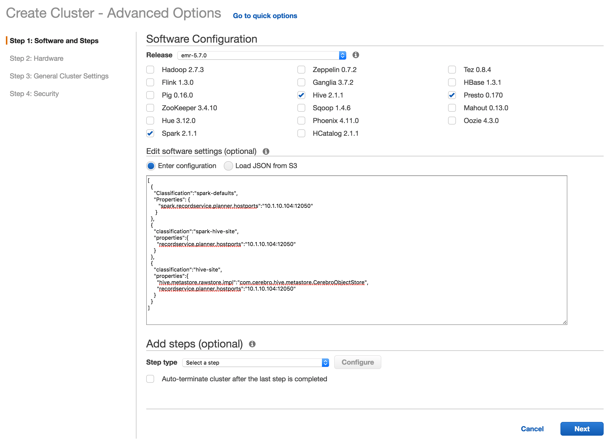
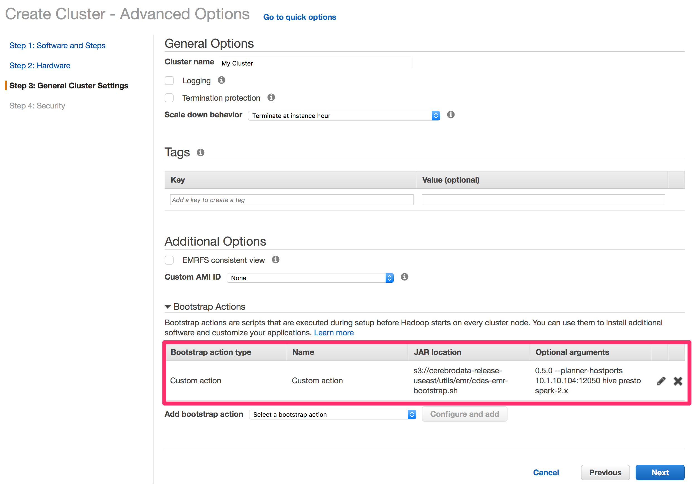
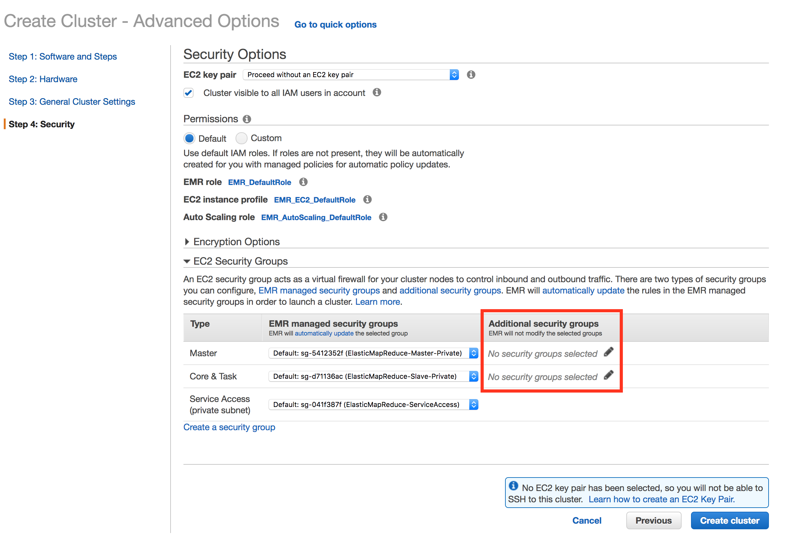

Cerebro Data Access Service EMR Integration
This documents describes how to use Cerebro Data Access Service (CDAS) from EMR and how to configure each of the supported EMR services. It assumes that the CDAS cluster is already running.
As part of the installation, specify:
-
A bootstrap action to download the Cerebro client library on the cluster nodes
-
A bootstrap script to set the appropriate user accounts permissions on an EMR cluster
-
A configuration to set the client library to use a CDAS install
This is optional for some components. An EMR cluster that is using multiple components should apply each configuration.
Note: EMR versions 5.3.0 through 5.9.0 are supported through the latest bootstrap scripts.
Client Node Bootstrap
The first bootstrap action places the client jars in the /usr/lib/cerebro directory and creates links into component-specific library paths.
To bootstrap the cluster, run the script, and specify the version and components you have installed.
The bootstrap script is located at:
s3://cerebrodata-release-useast/utils/emr/cdas-emr-bootstrap.sh
Script Usage
cdas-emr-bootstrap.sh <cdas version> [options] <list_of_components>
Options
--planner-hostports <HOSTPORT>– Link to thecerebro_planner:plannerendpoint--token <TOKEN>– The token that identifies the user
For example, to bootstrap a Spark 2 cluster from the Cerebro 0.8.1 client release, provide the arguments 0.8.1 spark-2.x.
If running EMR with Spark 2 and Hive, provide 0.8.1 spark-2.x hive.
The complete list of supported components are:
- Apache Spark 2 (
spark-2.x) - Apache Hive (
hive) - Presto (
presto)
Non-compute components can also be used and do not require any CDAS-related steps. These include:
- Apache Zeppelin
- Ganglia
- Apache ZooKeeper
- Apache Hue
NOTE: CDAS client version must be 0.7.3 or later, when EMR Presto is used.
User Setup Bootstrap
For the second bootstrap action, the following script is used to configure one or more users.
Run this script for at least one user (likely the default EMR user, hadoop).
s3://cerebrodata-release-useast/utils/emr/bootstrap-users.sh
Script Usage
bootstrap-users.sh <list_of_users>
Where the <list_of_users> is delimited by spaces.
Example: Setting up an EMR cluster for users alice and bob
bootstrap-users.sh alice bob
This script:
- creates the group
cerebro; - creates a script in
/tmp/that waits for the given account to exist, for each service account (hive,presto,spark), each script running in the background; - adds the account to the
cerebrogroup; - sets the expected permissions on both the given user’s home directory and the
.cerebrodirectory within their home directory.
The preceding steps result in the EMR service users having permission to read (and possibly write) a user’s token, because of their membership in the cerebro group.
Group membership enables the Cerebro client libraries to authenticate the user by passing the user’s token to the CDAS cluster with each call.
End-to-End Operational Example
As an end-to-end operational example, start up a multi-tenant EMR cluster running Spark 2.x, Hive, and Presto, configured to run against CDAS Planner, and running at 10.1.10.104:12050.
Select “Go to advanced options” at the top of the “Create Cluster” screen

Step 1: Choose your components. Pick Spark, Hive, and Presto from the list of EMR components.  Set the Spark and Hive specific configs (more details below).
Optionally, pick Hue and Zeppelin as components that do not require CDAS related steps:
Configuration example (you can copy/paste this and replace the IP addresses with the IP of your Planner):
[
{
"Classification":"spark-defaults",
"Properties": {
"spark.recordservice.planner.hostports":"10.1.10.104:12050"
}
},
{
"Classification":"spark-hive-site",
"Properties":{
"recordservice.planner.hostports":"10.1.10.104:12050"
}
},
{
"Classification": "hive-site",
"Properties": {
"hive.fetch.task.conversion": "minimal",
"hive.metastore.rawstore.impl": "com.cerebro.hive.metastore.CerebroObjectStore",
"recordservice.planner.hostports": "10.1.10.104:12050"
}
}
]
Additional configuration examples are found in the program-specific sections below.
Step 2: Use your preferred EMR hardware setup.
Step 3: - Name your cluster something other than the default.
Configure the EMR cluster to use the Cerebro bootstrap script. Do the following:
- Add a ‘Custom action’ under bootstrap actions
- The script is currently located at
s3://cerebrodata-release-useast/utils/emr/cdas-emr-bootstrap.sh - Specify the
--planner-hostportsoption. Since this is multi-tenant, there is no need to provide an access token to the bootstrap script. All options should be specified before the list of components. - Add the list of supported components to the bootstrap script.
Since we’re starting with Hive, Presto and Spark, specify
hive,presto, andspark-2.x:

Step 4: Set up the security options.
Specify additional security groups in order for the EMR cluster to communicate with the CDAS cluster. Add whatever security groups you specified for the CDAS hosts to the Master, Core, and Task rows.

Step 5: Create the EMR cluster and wait for it to be ready.
The Cerebro components have been installed and configured when the cluster reports a ready status.
Since this is a multi-tenant cluster, care must be taken to manage users that have access to this cluster. Each user can authenticate to Cerebro with their own token, using access control, handled by Cerebro.
Note: The EMR username does not need to be the same as the subject in the user access token. When the user is authenticated, Cerebro uses the username specified in the token. The token can be installed with the following commands:
mkdir -p /home/<user>/.cerebro/ echo "longstringtoken" > ~/.cerebro/tokenWhere
longstringtokenis the user’s long string token.
The token must be owned by the group cerebro and have its permissions set so that the group can list and read the token.
Write access is required if you are using a token refresh script, as described in the Authentication doc.
Cerebro supplies a script to set the permissions on a token appropriately.
Make sure that the service accounts are in the cerebro group and then run the script located at:
/usr/lib/cerebro/set_token_access.sh
Note: this script must be run by a user with sudo privileges
The Hadoop, Hive, Spark and Presto services should be restarted to update the groups to which those services have been added.
A script to restart the pertinent services is located at /usr/lib/cerebro/restart_emr.sh.
A similar user hierarchy should also be created in the Hadoop filesystem (HDFS or EMRFS).
$ hadoop fs -mkdir /user/<user>
$ hadoop fs -chown <user>:<user> /user/<user>
$ hadoop fs -chmod 750 /user/<user>
The user can now use the following the EMR components to access data managed by Cerebro:
Example: Accessing data with presto-cli
$ ./presto --server localhost:8080 --catalog hive --schema default
presto> show catalogs;
# This should return 'recordservice' among others.
presto> SHOW TABLES in recordservice.cerebro_sample;
presto> select * from recordservice.cerebro_sample.sample;
Example: Accessing data with Hive
$ hive
hive> show databases;
hive> select * from cerebro_sample.sample;
Example: Accessing data with Beeline
$ beeline -u jdbc:hive2://localhost:10000/default -n hadoop
beeline> show tables in cerebro_sample;
beeline> select * from cerebro_sample.users limit 100;
Example: Accessing data with Spark shell (Scala)
$ spark-shell
scala> spark.conf.set("spark.recordservice.delegation-token.token", "<USER TOKEN>")
scala> val df = spark.sqlContext.read.format("com.cerebro.recordservice.spark").load("cerebro_sample.sample")
scala> df.show()
Storing Tokens on Multi-Tenant Clusters
Cerebro supports multi-tenant EMR clusters, as each Cerebro request includes the caller’s token. Requests by users on the same EMR cluster but using different tokens are independently authorized by Cerebro’s access controls. They potentially see different data.
It is the responsibility of the EMR cluster to make sure that it is not easy for users on the same cluster to access other users’ tokens or data.
The token is never logged in its entirety by Cerebro, but the user needs to make sure that the token is not accidentally exposed through the OS.
For a secure multi-tenant cluster, Cerebro recommends users do not log in as the same user (for example, hadoop) and that the users logging in do not have root permissions.
Otherwise, the local cluster OS is not secure.
Similarly, not logging in as the same user, prevents users from viewing each other’s intermediate files in HDFS.
Cerebro recommends that each user on the cluster persist their token under their home directory and make sure the directory is not world readable.
Example: Secure token management
$ mkdir -p ~/.cerebro/
$ echo "longstringtoken" >> ~/.cerebro/token
Note: The EMR user need not match the token’s subject. Cerebro authenticates the user using the token only.
Per-Component Configuration
In this section the configurations required to configure each supported EMR component are detailed.
With all components, Cerebro requires specifying the Planner hostport and can optionally take the access token. For single-tenant clusters, specifying the token early eliminates the need to specify the token after the cluster is up.
Warning: This apporach should not be used in a multi-tenant cluster.
Spark
Setting up Spark
Multi-tenant cluster:
[
{
"Classification":"spark-defaults",
"Properties": {
"spark.recordservice.planner.hostports":"10.1.10.104:12050"
}
},
{
"Classification":"spark-hive-site",
"Properties":{
"recordservice.planner.hostports":"10.1.10.104:12050"
}
}
]
Single-tenant cluster:
[
{
"Classification":"spark-defaults",
"Properties": {
"spark.recordservice.planner.hostports":"10.1.10.104:12050",
"spark.recordservice.delegation-token.token":"<TOKEN>"
}
},
{
"Classification":"spark-hive-site",
"Properties":{
"recordservice.planner.hostports":"10.1.10.104:12050"
}
}
]
Using Spark
Once the cluster is set-up, you can interact with the spark-shell as follows.
- Specify the user’s token if this was not specified above.
scala> spark.conf.set("spark.recordservice.delegation-token.token", "<user_token>") - For CDAS versions up to 0.4.5, specify the service name.
scala> spark.conf.set("spark.recordservice.delegation-token.service-name", "<PLANNER SERVICE NAME>") - Load a cerebro table, and you’re good to go.
scala> val df = spark.sqlContext.read.format("com.cerebro.recordservice.spark").load("<DB.TABLE>") scala> df.show()
Hive
Setting up Hive
In addition to the common flags, Hive requires another configuration, using hive.metastore.rawstoreimpl, to integrate with the Cerebro catalog.
Multi-tenant cluster:
Example: Connecting to Planner at 10.1.10.104:12050 on a multi-tenant cluster
[
{
"Classification": "hive-site",
"Properties": {
"hive.fetch.task.conversion": "minimal",
"hive.metastore.rawstore.impl": "com.cerebro.hive.metastore.CerebroObjectStore",
"recordservice.planner.hostports": "10.1.10.104:12050"
}
}
]
Single-tenant cluster:
Example: Connecting to Planner on a single-tenant cluster
[
{
"Classification": "hive-site",
"Properties": {
"hive.fetch.task.conversion": "minimal",
"hive.metastore.rawstore.impl": "com.cerebro.hive.metastore.CerebroObjectStore",
"recordservice.planner.hostports": "10.1.10.104:12050"
}
},
{
"Classification":"core-site",
"Properties":{
"recordservice.delegation-token.token":"<TOKEN>"
}
}
]
Using Hive
You can use Hive in a very similar way to before, by using Hive or Beeline, as shown below.
$ hive
hive> show databases;
hive> select * from cerebro_sample.sample;
Users must specify their local Unix user (for example, hadoop) at connection time:
$ beeline -u jdbc:hive2://localhost:10000/default -n hadoop
beeline> show tables in cerebro_sample;
beeline> select * from cerebro_sample.users limit 100;
Cluster local DBs
With the default install, the Hive Metastore (HMS) running on the cluster populates all of its contents from Cerebro Catalog. In other cases, it could be useful to use HMS to register cluster-local (tmp) tables, for example, for intermediate results.
This can be done by configuring the set of databases that should only exist locally, either during bootstrap or by updating hive-site.xml and restarting HMS.
For example, the setup could be configured so that any Hive operation to the database localdb is cluster-local.
This includes tables, views, and so forth.
This database is never reflected in Cerebro, and access to data or metadata in these databases do not use Cerebro.
If Spark is included in the EMR cluster, the global_temp database is automatically setup to be cluster-local.
Local DBs are also useful in creating materialized views (caches of datasets from queries) for faster access. An example would be to create a table in localdb using data from Cerebro datasets (using create table as select statement).
Example: Creatinga table in localdb
CREATE TABLE localdb.european_users AS SELECT * FROM users WHERE region = 'europe'
The location for these tables can be changed to S3 bucket.
This can be set in hive-site.xml.
Example: Changing table locations to an S3 bucket
<property>
<name>hive.metastore.warehouse.dir</name>
<value>s3://cerebrodata/warehouse</value>
<description>location of default database for the warehouse</description>
</property>
External storage location is supported for S3 buckets only.
In the case where the local database has the same name as a Cerebro database, the local database takes precedence, and the user is not able see the contents in that Cerebro database from Hive.
Example: Configuring local databases in hive-site.xml
<property>
<name>cerebro.local.dbs</name>
<value>localdb,testdb</value>
<description>
Comma-separate list of local database names. These don't need to already exist.
</description>
</property>
Example: Configuring local databases using bootstrap script
{
"Classification": "hive-site",
"Properties": {
"cerebro.local.dbs": "localdb,testdb"
}
}
Note on local DBs
Any local database, and the datasets in it, are not accessible by CDAS. The local database is ephemeral and goes away when the EMR cluster is shutdown. If the storage is externalized to S3, or shared HDFS, then a new external table definition, with location set to the S3 folder, could be used to access the dataset.
Known Incompatibilies
With CDAS installation, Hive uses externalized metadata managed by CDAS.
As a result, it is not possible to alter the location of a table or partition to a Cerebro dataset by way of Hive. Instead, altering the location is done by way of a native Cerebro client; for example, the dbcli client.
Hive treats externals table created using Hive against CDAS, as external, non-native type.
ALTER TABLE is not supported on external, non-native tables.
Example: Using dbcli to alter the table location
dbcli dataset hive-ddl "alter table cerebro.users set location 's3a://cerebrodata/correctedlocation'"
Limitations
Note: The CDAS authorization is not currently supported from the Hive CLI. For example,
SHOW ROLESdoes not list the CDAS roles.
SQL data manipulation (DML), such as INSERT statements, is not supported in Hive.
Presto
Setting up Presto
Presto requires configurations to be passed as arguments to the bootstrap script instead of providing them as configurations, but otherwise requires similar configs as the other components.
Note: The options must come before the list of components.
Example: Multi-tenant Presto setup
cdas-emr-bootstrap.sh 0.8.1 --planner-hostports 10.1.10.104:12050 presto
Example: Single-tenant Presto setup
cdas-emr-bootstrap.sh 0.8.1 --planner-hostports 10.1.10.104:12050 --token longstringtoken presto
Using Presto
Once the EMR cluster is launched, and the token has been stored, if necessary, you can interact with presto-cli, as you typically would.
Example: Displaying catalogs using presto-cli
$ presto-cli
presto> show catalogs;
This should return recordservice among others.
Example: Querying metadata and select form tables
presto> SHOW TABLES in recordservice.cerebro_sample;
presto> select * from recordservice.cerebro_sample.sample;
Known Limitations
The ddl and dml commands are not supported in Presto.
Logging
On the EMR instances, the bootstrapping logs are located in /var/log/bootstrap-actions/.
This is helpful if the cluster is not starting up and could indicate a misconfiguration of the bootstrap action.
Presto
EMR precludes us from fully configuring logging for Presto.
To complete the configuration, edit the file located at /etc/presto/conf.dist/jvm.config, and add this line to the end of it:
-Dlog4j.configuration=file:/etc/presto/conf/log4j.properties
In order for the Cerebro Presto plugin to log correctly, restart the Presto services on all of the nodes in the cluster.
Configs
Configs are generally written to /etc/[component].
Configs should replicate the configurations that were specified during cluster creation.
Updating CDAS Client Libraries
CDAS client libraries are located in the /usr/lib/cerebro directory on each of the EMR instances.
To upgrade CDAS client, become root user, download the client library, and restart the corresponding services.
Replace VERSION with the version of CDAS client to which you are upgrading.
To restart the services, refer to
Amazon’s service restart instructions.
Updating Client Libraries: Presto
- SSH to each EC2 node in the EMR.
cd /usr/lib/cerebro curl -O https://s3.amazonaws.com/cerebrodata-release-useast/<VERSION>/client/recordservice-presto.jar - Restart the presto server on all the EC2 nodes.
stop presto-server start presto-server
Updating Client Libraries: Hive
- SSH to each of the EC2 nodes in the EMR.
cd /usr/lib/cerebro/ curl -O https://s3.amazonaws.com/cerebrodata-release-useast/<version>/client/recordservice-hive.jar - On the master EC2 node, download the Hive metastore jar and restart both the hive-server and the Hive metastore.
cd /usr/lib/cerebro/ curl -O https://s3.amazonaws.com/cerebrodata-release-useast/<version>/client/cerebro-hive-metastore.jar stop hive-hcatalog-server stop hive-server2 start hive-hcatalog-server start hive-server2